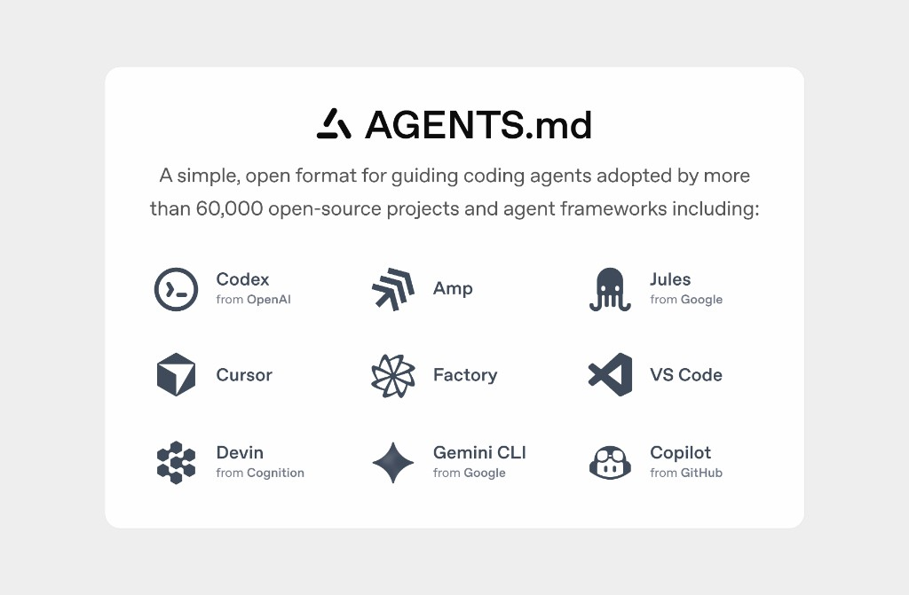
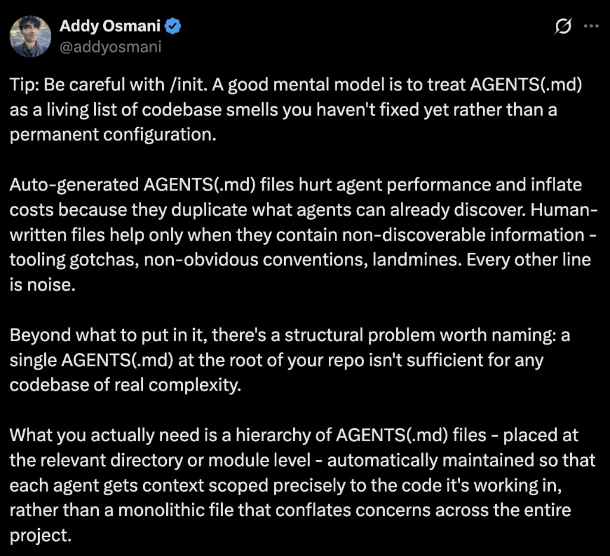

AGENTS.md is a repository-local instruction file for AI coding agents.
Agents can see the code, but they don't automatically know the project's conventions, workflows, boundaries, or validation requirements.
The agent discovers AGENTS.md, loads its instructions into context, and uses them while planning, editing, testing, and reviewing code.

Think of it as: README.md for humans → AGENTS.md for coding agents
Slide 4 | From Codex Convention to Open Standard | 1 minute
From Codex Convention to Open Standard
Introduced with CodexRepository instructions for coding agents
Donated to AAIFNeutral stewardship under the Linux Foundation
Widely adopted standard24k+ GitHub stars
Slide 5 | How teams write AGENTS.md today | 1 minute
How teams write AGENTS.md today
Human writes it
Agent generates it
Community templates with best practices
Teams maintain it manually
As the repository changes, someone is expected to keep the instructions synchronized.
Slide 6 | The missing feedback loop | 1.5 minutes
The missing feedback loop
AGENTS.md gives agents persistent repository context. But how does that context improve as agents actually work?
01
Repository changes
Commands, paths, architecture, and workflows evolve.
02
Instructions drift
A rule that was correct six months ago may now be wrong.
03
Agents repeat mistakes
The same failed exploration can happen again because nothing records the lesson.
04
More rules can make things worse
Teams respond by adding more instructions, increasing context and creating conflicting or stale guidance.

The question is how we continuously improve what belongs inside it.
Slide 7 | AGENTS.md needs an evidence bar | 1 minute
AGENTS.md needs an evidence bar
Maintaining agent instructions is already an engineering discipline.
01
Keep it lean
AGENTS.md < 200 lines
02
Don't blindly add rules
Test whether the rule is actually needed.
03
Learn from repeated mistakes
Good domain guides contain fixes for repeated mistakes.
This is already how mature projects think about agent instructions. Our question is: can we make part of this maintenance loop systematic?
Slide 8 | agentsmd architecture | 2 minutes
Architecture
One shared loop behind every coding CLI
Capture adapters
Codex, Claude Code, Cursor, and goose emit different lifecycle events.
provider event
›
Normalized trajectory
Commands, files, tests, tokens, duration, Git state, and logical task identity share one schema.
.agentsmd/runs/*.json
›
Reflect and evaluate
One task-boundary verdict enters the pending queue. A gate decides whether it reaches the ledger.
pending → ledger → render
validated guidance returns to AGENTS.md for the next session
Slide 9 | CLI setup | 2 minutes
Live CLI
Setup takes three commands
Initialize repository state, inspect the developer environment, then connect the coding CLI the team already uses.
agentsmd · project setup
Slide 10 | Before and after AGENTS.md | 2 minutes
Before and after
The loop adds two precise rules
BEFORE · STATIC GUIDANCE
# AGENTS.md
## Project
- This is a Go command-line application.
- Keep changes small and preserve behavior.
## Validation
- Run focused tests, then `go test ./...`.
- Format Go files with `gofmt`.
AFTER · VALIDATED DELTA
# AGENTS.md
## Project
- This is a Go command-line application.
- Keep changes small and preserve behavior.
## Validation
- Run focused tests, then `go test ./...`.
- Format Go files with `gofmt`.
+ ## Learned rules+ - Begin config bugs in loader.go and its tests.+ - Keep GOCACHE inside restricted workspaces.
Slide 11 | The learning loop in the CLI | 3 minutes
Recorded study
Session evidence becomes a reviewable rule
The active file does not change until the proposal passes its gate.
agentsmd · task config-precedence
Slide 12 | Recorded held-out result | 2 minutes
Six real runs
Success held while median cost fell
Six real runs on the same Go configuration task, graded with hidden tests after each agent exits.
3/3baseline passes
3/3learned-guidance passes
−40.2%median reported tokens
−17.0%median wall time
Baseline tokens90,724
Learned tokens54,274
Median commands5 → 3
One task, one model, three trials per condition. This demonstrates the mechanism, not a universal performance claim.


 github.com/rudrakshkarpe/agentsmd-cli
github.com/rudrakshkarpe/agentsmd-cli